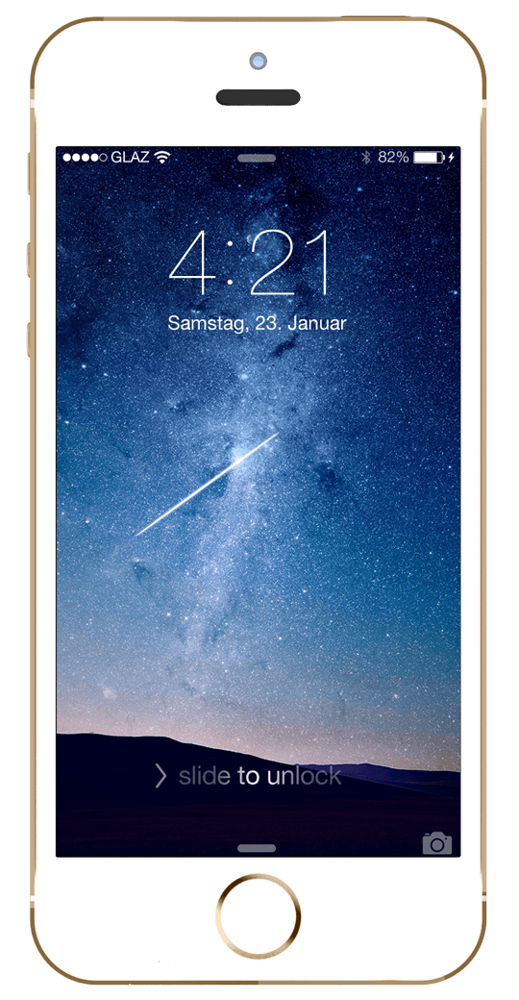

Welcome to sofichael's site.
热衷于AngularJS框架开发WEB,移动APP.
熟练使用Yeoman脚手架快速搭建前端框架.
熟练使用Bootstrap框架搭建前端.
熟练使用Gulp优化前端结构.
熟练使用Git管理版本控制.熟练使用Git Flow管理开发,bug修复,发布版本
喜欢使用NodeJS + MongoDB构建小应用.
车护宝PC端： http://www.chehubao.com 
车护宝移动端： http://m.chehubao.com
微配配件商PC端： http://pjs.weipei.cc
配件商BD移动端： http://h5.weipei.cc